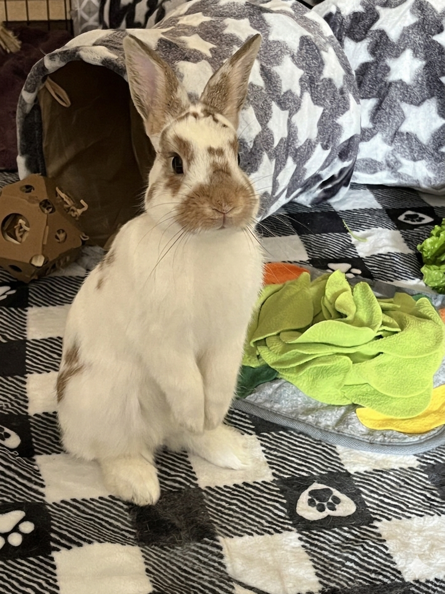

My name is John. I live in the western suburbs with my wife, Ann. I am in my 2nd year of the MLIS program.
I enjoy reading, watching movies and sports, and playing video games.
We have two pets - a rabbit named Sprout and a dwarf hamster named Snorlax. Sprout is an English spot - Netherland dwarf mix.
